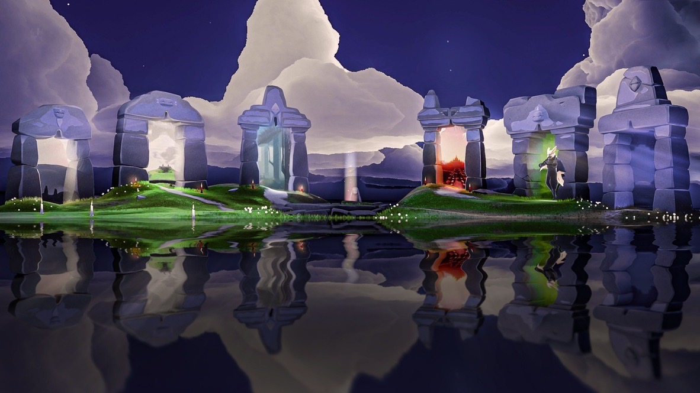

光遇中的主要地图
光遇的世界由多个精美且具有独特主题的地图组成。每个地图都有自己独特的风景、任务和先祖，玩家可以在这些地图上探索、解锁新能力，或者通过与其他玩家的合作来共同完成任务。
1. 晨岛
晨岛是游戏的起始地图，玩家从这里开始冒险。这里有温暖的阳光，宁静的湖泊，非常适合新手玩家练习基础飞行和任务。
- 代表先祖：晨岛的先祖教导玩家如何掌握基本的飞行技能和基础互动。
- 主要任务：完成蜡烛收集任务，解锁飞行技能。
- 隐藏区域：晨岛有一个小型隐藏花园，可以通过完成特殊任务解锁。
2. 云野
云野是一个具有梦幻色彩的地图，玩家可以在这里飞翔，穿越浮动的云朵，解锁新的飞行技能。
- 代表先祖：云野的先祖传授如何更高效地飞行，解锁更高级的飞行技巧。
- 主要任务：收集蜡烛并与其他玩家合作，通过平台之间的挑战来解锁新技能。
- 隐藏区域：云野的浮空岛屿中有一个隐藏的飞行挑战区域。
3. 雨林
雨林是一个充满生机和湿润气息的地图，绿意盎然。玩家需要在这里解决谜题，收集蜡烛并解锁新技能。
- 代表先祖：雨林的先祖教导玩家如何利用雨水和植物的力量来提升飞行能力。
- 主要任务：探索和解锁隐藏的区域，通过与其他玩家合作完成谜题。
- 隐藏区域：雨林中的湿气区域隐藏了一个神秘的水上飞行挑战。
4. 霞谷
霞谷是一片温暖的山谷，夕阳的余晖总是洒在这片土地上。这里有着丰富的资源，玩家可以完成更多的任务。
- 代表先祖：霞谷的先祖传授如何获取蜡烛，解锁技能提升飞行。
- 主要任务：在霞谷的各个区域完成挑战，解锁新的飞行技能。
- 隐藏区域：在霞谷的山脚下，隐藏着一个只有特定飞行技能才能进入的秘密洞窟。
5. 墓土
墓土是一个充满阴森气息的地图，玩家需要在这里与其他玩家合作，解开谜团，找到通往未来的道路。
- 代表先祖：墓土的先祖教导如何在黑暗和阴影中飞行，完成任务。
- 主要任务：通过墓土的挑战，解锁新能力，找到隐藏的蜡烛。
- 隐藏区域：墓土的地下隐藏着一个难度极高的挑战区，只有通过特定的方式才能解锁。
6. 禁阁
禁阁是光遇中的最神秘、最具挑战的区域，玩家需要面对强大的对手，解决复杂的谜题。
- 代表先祖：禁阁的先祖是最强大的，玩家需要掌握高级技能才能挑战。
- 主要任务：进入禁阁，探索神秘的区域，并解锁终极技能。
- 隐藏区域：禁阁中的一个隐藏房间只有通过多次合作才能进入，挑战极为困难。